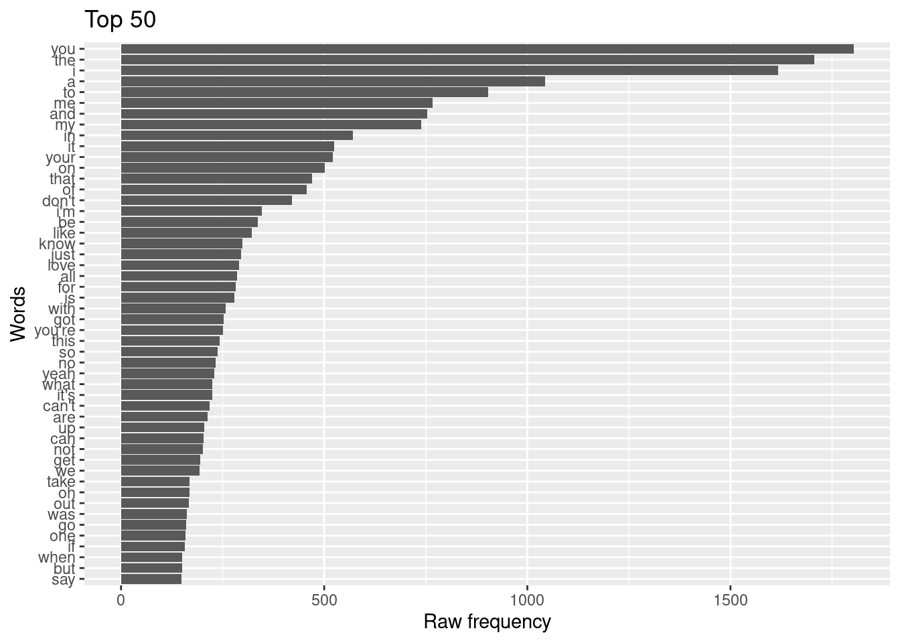

This section of my project has to do with the prevalence of African American Vernacular in each genre. My hypothesis is that Pop will be the most similar genre to Hip-Hop because recent studies show that many Pop singers are appropriating AAVE in their lyrics in order to convey certain themes.
The way that I am going to look for this is through copula absence in the lyrics of each genre. The genres with the highest absence will be more representative of AAVE.
I am going to be using the textstat_frequency feature in order to search for “is” and “are” frequencies in each genre.
source("../functions/acquire_data_functions.R")
lastfm <- read_csv(file = "../data/derived/lastfm/lastfm_curated.csv") # read in lastfm_curated dataset ## Rows: 155 Columns: 3## ── Column specification ───────────────────────────────────────────────────────────────────
## Delimiter: ","
## chr (3): song, lyrics, genre##
## ℹ Use `spec()` to retrieve the full column specification for this data.
## ℹ Specify the column types or set `show_col_types = FALSE` to quiet this message.library(quanteda.textstats)
library(quanteda.textmodels)
library(quanteda)lastfm_corpus <-
lastfm %>% # data frame
corpus(text_field = "lyrics") # create corpuslastfm_tokens <-
lastfm_corpus %>% # corpus object
tokens(what = "word", # tokenize by word
remove_punct = TRUE) %>% # remove punctuation
tokens_tolower() # lowercase tokenslastfm_dfm <-
lastfm_tokens %>% # tokens object
dfm() # create dfmlastfm_dfm %>%
textstat_frequency() %>%
slice_head(n = 10)lastfm_dfm %>%
textstat_frequency() %>%
slice_head(n = 50) %>%
ggplot(aes(x = reorder(feature, frequency), y = frequency)) + geom_col() + coord_flip() +
labs(x = "Words", y = "Raw frequency", title = "Top 50")
lastfm_dfm %>%
dfm_weight(scheme = "prop") %>% # term-frequency weight
textstat_frequency(groups = genre) %>% # include genre as a group
filter(feature == "is") # filter only "is"The table here shows that hip-hop, as expected, has the lowest frequency of the verb “is” which is a form of the verb “to be.” This copula absence is common among speakers of AAVE. Interestingly, country has the next lowest frequency. My hypothesis was that Pop would be the genre that was most similar to Hip-Hop for that grammar feature. However, the frequency in Pop is much higher than Hip-Hop or Country.
lastfm_dfm %>%
dfm_weight(scheme = "prop") %>% # term-frequency weight
textstat_frequency(groups = genre) %>% # include genre as a group
filter(feature == "are") # filter only "is"Again, Hip-Hop has one of the lowest frequencies of this verb form of “to be.”Pop had a much closer frequency to Hip-Hop this time. Shockingly, the frequency is the smallest in Country lyrics.
My data shows that copula absence is present in Hip-Hop lyrics from Last Fm. The words “is” and “are” were not used as frequently in Hip-Hop as other genres, like Rock. However, it was interesting to find that the data also shows that Country is more alike to Hip-Hop in this way than Pop.
This evidence does not show a lack of appropriation of AAVE in pop music. It does show, however, the similarities between African American English and White Southern English. At the time that AAVE was developed, the majority of African Americans lived in the South Gehrmann (n.d.). This means that the two dialects were very similar and remain similar even today. Other researchers who have looked at individual artists have found the prevalence of Black English to be significant in white Pop artist’s lyrics. Eberhardt and Vdoviak-Markow (2020) Eberhardt and Freeman (2015) I think in order to fully look at the prevalence of appropriation in the Pop genre alone, you would need to create a data base that was only white pop stars.
View session information